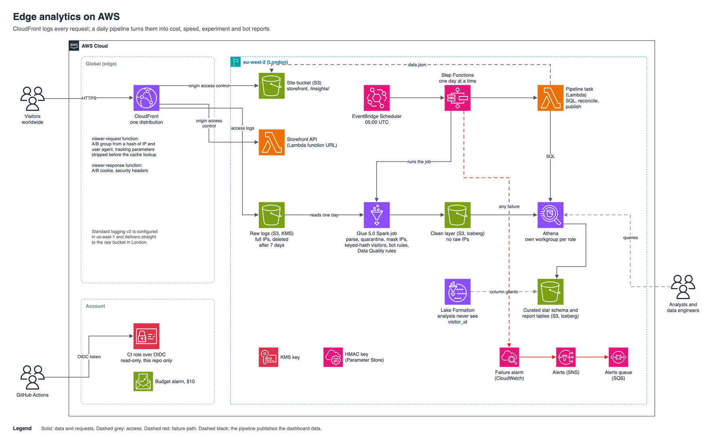
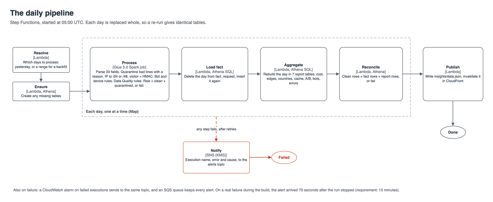
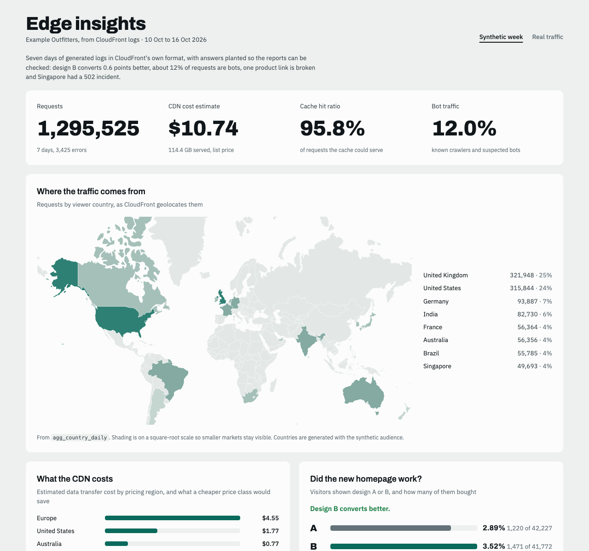

How it works, why it was built this way, everything that went wrong on the way, and how to talk about it in an interview.
Repo: github.com/gumagatsby/aws-edge-analytics

I built a platform that turns a CDN's access logs into answers a business can act on (what the CDN costs by region, where the site is slow, whether a redesign sells more, how much traffic is bots) while removing visitors' IP addresses, and I proved the answers right by planting known ones in 1.3 million synthetic log lines and checking the platform found every one.
The client is a fictional UK online retailer with a static site and a small API behind CloudFront. CloudFront logs every request and nobody reads the logs. The brief listed five problems: a rising CDN bill, complaints that the site is slow in some countries, a homepage redesign nobody can evaluate, inflated traffic figures, and IP addresses kept forever. The team knows SQL, has little Python and won't run servers. The account is on the AWS Free plan and the build budget is $10.
| Piece | Technology | Job |
|---|---|---|
| Edge | CloudFront, two CloudFront Functions | Assigns each visitor to design A or B, strips tracking parameters before the cache lookup, writes the group into the log line |
| Origins | S3 (site), Lambda function URL (API) | Reachable only through CloudFront, using origin access control |
| Log delivery | CloudFront standard logging v2 | Delivers every request to a raw bucket in London, encrypted, deleted after 7 days |
| Processing | Glue 5.0 Spark job, Glue Data Quality | Parses 33 fields, quarantines bad lines, masks IPs, hashes visitors, classifies bots |
| Model and reports | Athena SQL over Iceberg tables | A star schema and 7 report tables, rebuilt one day at a time |
| Orchestration | Step Functions, EventBridge Scheduler | Runs the day at 05:00 UTC, alerts on any failure |
| Access control | Lake Formation, per-role Athena workgroups | Analysts never see visitor identifiers |
| Dashboard | React, Vite, Bklit UI charts | Served at /insights/ on the same distribution |
| Delivery | Terraform, GitHub Actions over OIDC, Checkov | Everything is code; CI has no stored AWS keys |

Each step deletes the day it is about to write and inserts it again. Iceberg tables support DELETE, so a re-run, a backfill or a fix replaces a day cleanly instead of adding duplicates. I tested it by taking a row count and checksum of all 11 tables, re-running a day, and comparing: identical, on two different days.
The Glue job writes each line to the clean table or to a quarantine table with the reason, and fails unless raw = clean + quarantined. After the SQL steps, a reconcile step checks clean = fact = report rows. A run that loses or invents a row stops, and the alert arrives within minutes.
The site has no real customers, so I used two kinds of traffic. Real traffic from a laptop and from GitHub's US runners produces genuine CloudFront logs, which proves the parser. A synthetic week in CloudFront's exact format, with answers planted in it (a bot share, a broken link, an outage in Singapore, a 0.6 point conversion lift for design B), proves the reports. The platform found every planted answer.
visitor_id at all.| Question | Answer (synthetic week) | Recommendation |
|---|---|---|
| What does the CDN cost? | $10.74 for 114.4 GB at list price. Price class 100 would save 9.4% but serve 32% of bytes from further away. | Keep all edge locations: the saving is about $1 a week, and it lands on the visitors who are already slowest. |
| Where is the site slow? | Cache hits take about 10 ms everywhere. Misses go back to London: 38 ms in London and Manchester, 325 ms in Auckland. Real traffic shows the same: 330 ms on a miss in Lagos, 2 to 3 ms on a hit. | Trial longer cache lifetimes on product pages, measured on this dashboard. |
| Did the redesign work? | B converts at 3.52% against 2.89%: 0.63 points better, 95% interval 0.39 to 0.87. Planted: 0.60. | Ship B, keep a small holdout on A. |
| How much is bots? | 12.0%, found to within 0.005 points of the planted share every day, including a scraper posing as a browser. | AWS WAF Bot Control in production. |
| Campaign links | Tracking parameters made each link its own cache entry. Stripping them at the edge took those requests from 8.0% to 97.5% cache hits; on real traffic, 1 of 99 to 99 of 99. | Keep it on. |
Every client error in the week came from one broken link, /products/13.html, and every server error was the planted Singapore incident: 245 502s on 13 October, found exactly. The full results, with the real-traffic figures, are in docs/03-results.md.
The dashboard, served by the same distribution it reports on:

| Requirement | Result | |
|---|---|---|
| N1 | No raw IP beyond the raw layer; raw logs deleted after 7 days | Pass: 85 columns, 96,661 addresses, 0 matches; 7-day expiry rule |
| N2 | Analysts see aggregates only | Pass, 8 checks, including the engineer's query results |
| N3 | Raw = clean + quarantined, every run | Pass on every day and source |
| N4 | Re-processing a day gives identical results | Pass: 11 tables, rows and checksums, two days re-run |
| N5 | Alert within 15 minutes of a failure | Pass: 70 seconds, on a real failure |
| N6 | Data stays in eu-west-2 | Pass: all 5 buckets in eu-west-2 |
| N7 | Origin only through CloudFront | Pass: direct S3 and function URL return 403 |
| N8 | No long-lived AWS keys, including CI | Pass: OIDC, trusted only for this repository's immutable subject |
| N9, N10 | Destroyed completely; under $10 | Recorded after teardown in docs/03-results.md |
All of these happened on this build. The full story of each is in docs/04-build-log.md.
| Problem | Cause | What I did |
|---|---|---|
Kinesis and Firehose returned SubscriptionRequiredException; Lambda@Edge unavailable | The account's Free plan | Standard logging v2 to S3, processed daily; all edge logic in CloudFront Functions. Found on day one by testing first. |
| Couldn't reserve Lambda concurrency | The account quota is 10, and AWS keeps 10 unreserved | One day at a time in Step Functions; traffic generators capped at 6 workers; the Checkov skip says why |
| The two edge functions can't share state | CloudFront Functions keep nothing between request and response | Both compute the A/B group from the same hash of IP and user agent |
Three spike problems: CLI shorthand rejected, lost Terraform state for an origin access control, a pricing script KeyError | CLI parsing; state drift; non-USD price entries | JSON input; re-imported the resource; skip non-USD prices |
| Problem | Cause | What I did |
|---|---|---|
| The test data generator needed Spark | It imported the field list from the Spark module | Field list moved to its own module |
| Rows on the wrong day, stale quarantine rows after a re-run, failures misreported | Three bugs in the Glue job | Fixed; a re-run now replaces the day in both tables |
| Lake Formation rejected the column exclusion | It needs wildcard = true with excluded_column_names | Added it |
| The project's cost tag didn't appear in Cost Explorer | Cost allocation tags must be activated in Billing | Activated, so the build's cost can be measured |
| Checkov findings across the Terraform; CI would have ignored every skip | Real gaps, some false positives; the config path was wrong in CI | Fixed the gaps, justified each skip, fixed the path |
| Problem | Cause | What I did |
|---|---|---|
Invalid placeholder in string on the first deploy | A SQL comment contained ${...}, and placeholders were filled before comments were removed | Strip comments first; render all SQL locally before deploying |
| Access denied on the first Iceberg table | IAM changes take seconds to spread; Terraform didn't wait | Proved it with CloudTrail and a manual retry; added a 20-second wait |
| A Terraform diff that never cleared | The account's IAM_ALLOWED_PRINCIPALS default grant, which also let any Glue user bypass Lake Formation | Revoked it for this database only. Fixed a shell precedence bug in my first revoke command. Didn't hide the diff with ignore_changes. |
| Missing pages returned 403, hiding broken links | S3 answers 403 when the caller can't list the bucket | CloudFront may list the site bucket, so missing pages are real 404s; direct access is still 403 |
| Spark tests failed on the laptop | No Java; worker and driver Python differed; local time zone on collect() | Java 17 as in CI; workers pinned to the test's Python; UTC |
| Problem | Cause | What I did |
|---|---|---|
| The laptop's traffic went through a different edge location each day | CloudFront picks the best edge at that moment | Reports use only the edge recorded in each log line |
| The first backfill stopped on its own privacy check | Chrome/131.0.0.0 looks like an IPv4 address | The check now flags a row only if a kept column contains that request's own IP. The failure also proved the alert: 70 seconds. |
| Analysts could have read the engineer's query results | One shared Athena workgroup and results folder | A workgroup and results prefix per role, and a test for it |
| Rejected lines would have kept IPv6 addresses | The mask only matched IPv4 | Masks the line's own address, then any IPv4 or IPv6 shape; nothing had leaked |
| The privacy scan flagged 330 values | A network address ending in .0 equals itself as a host | That column is checked for network form instead; removed a silent LIMIT |
| Two planted answers missed | My comparison: bytes truth was humans only; two sessions shared an IP and user agent | Compared like with like; the generator records distinct visitors. No tolerance loosened. |
| A re-run changed two tables, then one | approx_percentile isn't deterministic; decimal sums depend on order | Exact percentiles; cost from whole bytes, priced once. Two days re-run, both identical. |
| Problem | Cause | What I did |
|---|---|---|
| Checkov passed locally, failed in CI with 23 failures | CI pulled a newer Checkov with new checks | Went through each; two conflict with the brief (replication leaves eu-west-2; versioning keeps IPs past 7 days). Same version locally now. |
| CI couldn't assume its AWS role | GitHub now issues an immutable subject with owner and repository IDs | Trust policy matches it, which is stricter; role ARN moved to a secret |
| The component installer hung | The shadcn tool stalled resolving the registry | A short script reads the registry JSON and writes the files; versions pinned |
| Charts drew nothing | A wrapper left them no height to fill | Each chart has a container with a set height |
/insights/ returned 404 | CloudFront serves index.html only at the root | The edge function adds index.html to folder URLs, with a test |
| A fresh checkout couldn't build the dashboard | A development-only sample file, not committed, was still resolved at build time | Loaded so it can be missing; built without it to check |
"Why not stream the logs in real time?"
The account couldn't: Kinesis isn't on its plan. The brief didn't need it either: the data has to be ready by 06:00 for the previous day. A daily batch from S3 meets that with no delivery charge and nothing running between runs. On a paid account I'd add real-time logs only for a question that needs minutes, like spotting an outage.
"How do you know the numbers are right?"
Two ways. Every run accounts for every row from raw to report, or it fails. And the synthetic week has known answers planted in it, so I could check the platform against the truth: every request, every bot, every broken link, every 502, the bytes by country and the experiment effect. When two answers missed, the fault was in my comparison, and I proved that before changing the test.
"How is re-running a day safe?"
Every step replaces the whole day. And the SQL has to be deterministic, which I learned from the test: approx_percentile and decimal sums gave slightly different results on re-runs. Exact percentiles and integer byte totals fixed it, proved by checksums on all 11 tables for two days.
"How do analysts not see visitor identifiers?"
Lake Formation column grants, plus a loophole most people miss: Athena writes query results to S3, so a shared results folder leaks whatever an engineer queried. Each role has its own workgroup and results prefix. I also revoked the account's default grant that lets any Glue user bypass Lake Formation, for this database only.
"Why Glue for one step and SQL for everything else?"
The client's team knows SQL, so everything they maintain is SQL. The one step that handles personal data needs a secret key, quarantine with reasons and user-agent parsing, which is awkward and leaky in SQL. At this volume Athena alone would be cheaper; I chose Glue for the privacy requirements, not for scale.
"What would you change for production?"
AWS WAF Bot Control to stop bots rather than just count them. A raised Lambda quota so the pipeline can reserve concurrency. Raw logs in a separate account that only the Glue job can read. And a longer experiment on real customers with a holdout, before trusting the lift.
| Check | Result |
|---|---|
| Edge function tests | 7 of 7 pass |
| API and pipeline tests | 2 and 5 pass |
| Spark transform tests (real Spark, Java 17) | 13 pass |
| Checkov on the Terraform | 248 passed, 0 failed |
| Dashboard lint and type-checked build | Pass |
| Planted answers recovered | All, every day (scripts/check_truth.py) |
| Requirements N1 to N8 | All pass (scripts/verify.py) |
| GitHub Actions CI | All 5 jobs green |